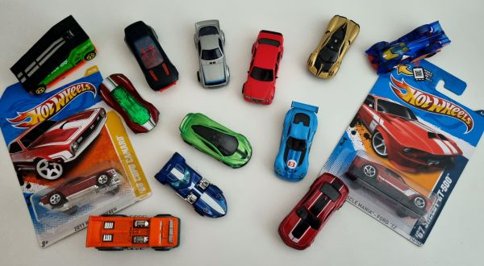

I Love Hot Wheels!
Unearth the Treasures of the Hot Wheels World
Some Hot Wheels are made for racing; others are made for collectors! Here, we showcase the rarest and most valuable models in Hot Wheels history. From limited-edition releases to vintage treasures, each car has a story that collectors worldwide appreciate.
Top Collectible Hot Wheels Models
The "Pink Beach Bomb" - One of the rarest Hot Wheels ever made, this model is iconic among collectors.
The First Editions
A look back at the first models that launched the brand in 1968.
Treasure Hunts
Discover how to identify these sought-after models and where to find them.
Tips for New Collectors
Interested in starting your own Hot Wheels collection? Get insider tips on how to spot valuable models, protect your collection, and connect with fellow enthusiasts.